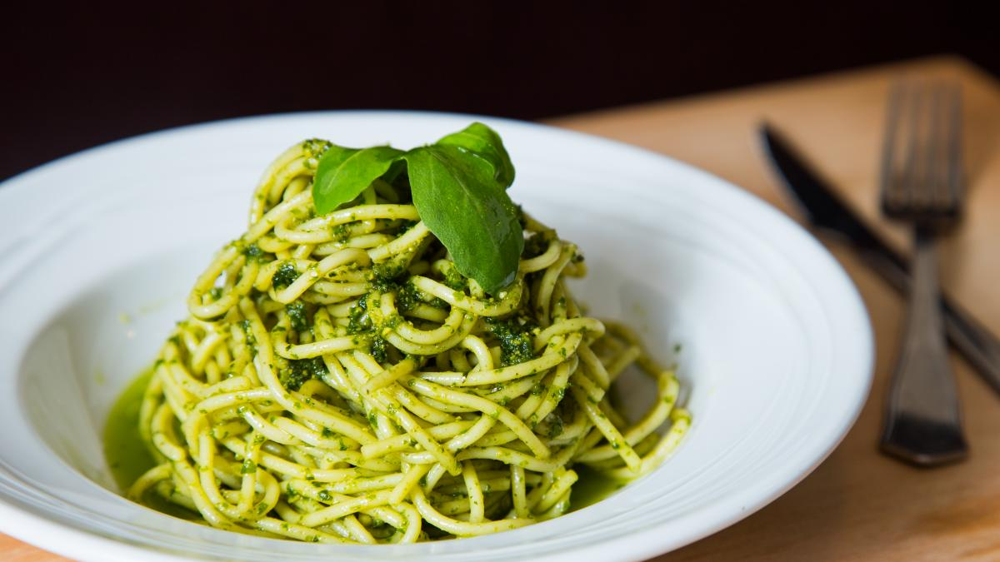

Pastas con Pesto de Albahaca
Deleita tu paladar con esta pasta al dente bañada en un pesto de albahaca casero. Las hojas frescas de albahaca, los piñones o nueces y el queso parmesano se unen en una deliciosa sinfonía de sabores. Una receta sencilla y sofisticada que te transportará a Italia con cada bocado.

Ingredientes:
250 gramos de pasta (puedes usar pasta corta como penne, fusilli, o cualquier otra de tu preferencia)
2 tazas de hojas de albahaca fresca
1/2 taza de queso parmesano rallado
1/4 de taza de nueces o piñones (opcional)
2 dientes de ajo
1/2 taza de aceite de oliva extra virgen
Sal y pimienta al gusto
Queso parmesano adicional para espolvorear (opcional)
Pasos:
1.Cocina la pasta siguiendo las instrucciones del paquete, en abundante agua con sal hasta que esté al dente. Luego escúrrela y resérvala.
2.En un procesador de alimentos o licuadora, coloca las hojas de albahaca fresca, el queso parmesano rallado, las nueces o piñones (si estás usando), los dientes de ajo y una pizca de sal y pimienta.
3.Procesa todos los ingredientes hasta obtener una mezcla homogénea. Luego, mientras el procesador de alimentos o licuadora sigue en funcionamiento, vierte gradualmente el aceite de oliva en un chorrito fino hasta que el pesto tenga una textura suave y cremosa.
4.Prueba el pesto y ajusta la sal y pimienta según tu preferencia.
5.Mezcla la pasta cocida con el pesto de albahaca en una sartén grande a fuego medio hasta que la pasta esté bien cubierta con el pesto y esté bien caliente.
6.Si lo deseas, espolvorea un poco más de queso parmesano rallado sobre la pasta antes de servirla.